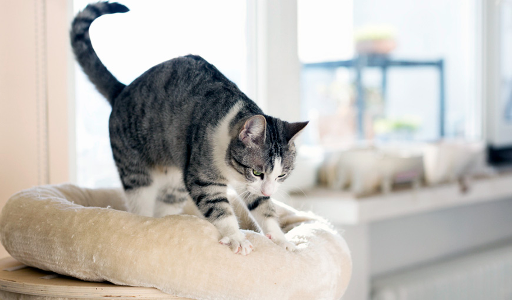

|
Интересные факты
Главная страница
Почему котики милые?
Зачем котики тыкают в нас лапками?
|
Зачем котики тыкают в нас лапками?

Одна из известных причин заключается в том,
что это всего лишь привычка из детства. Так, еще котятами, в процессе кормления они мяли живот мамы, чтобы улучшить приток молока. В более взрослом возрасте они могут повторять такие движения, когда им необходима ласка или чувство защищенности, которые они могут получить только от хозяина.
По мнению некоторых ученых, кошки могут мять людей или мебель и по другим причинам:
Снятие эмоционального напряжения. Некоторые заводчики отмечают, что питомец может мять кровать или диван слишком энергично и сердито без мурлыканья вследствие обиды кота на что-либо (отругали, разбудили и пр.). Таким образом питомец выплескивает стресс.
Проверка места отдыха. На подушечках кошачьих лап расположены многочисленные нервные рецепторы, позволяющие им очень тонко ощущать окружающий мир. Топчась по коленям или одеялу, животное проверяет их удобство.
Выработка гормонов счастья. Согласно результатам некоторых исследований, урча и топчась, кошки стимулируют выработку эндорфинов в собственном организме. Таким образом, животное будет мурлыкать и мять мягкие поверхности, чтобы повысить настроение и даже исправить плохое самочувствие.
Существуют и другие причины такого поведения, мы постарались представить вам наиболее вероятные варианты.
Желаем приятного времяпровождения со своим любимцем!
|